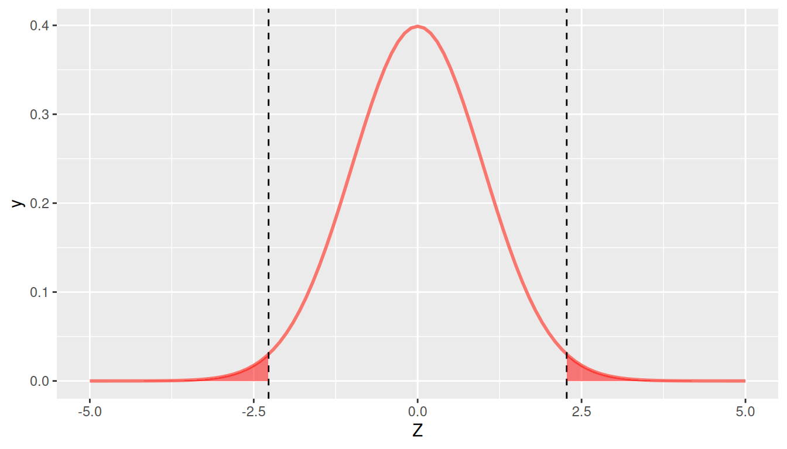

library(tidyverse)
library(moderndive)
library(infer)12 Hypothesis tests
In Chapter 11, we introduced the p-value, which provides analysts with a probability (between 0 and 1) that the observed data would be found if the null hypothesis were true. Readers familiar with the use of statistics may have noticed, however, that Chapter 11 did not refer to any criteria (e.g., p < .05) or use the phrase “statistically significant”. This is because the concept of a p-value is distinct from the use of a p-value to make a decision. In this chapter, we introduce hypothesis testing, which can be used for just this purpose.
Packages Needed
Let’s load all the packages needed for this chapter (this assumes you’ve already installed them). If needed, read Section 1.3 for information on how to install and load R packages.
12.1 Decision making
Remember that a p-value is a probabilistic proof by contradiction. It might show that the chance that the observed data would occur under the null hypothesis is 2%, 20%, or 50%. But at what level is the evidence enough that we would decide that the null hypothesis must not be true?
Conventional wisdom is to use \(p < 0.05\) as this threshold, where \(p\) denotes the p-value. But as many have pointed out – particularly in the current ‘replication crisis’ era – this threshold is arbitrary. Why is 5% considered small enough? Why not 0.5%? Why not 0.05%? Decisions regarding these thresholds require substantive knowledge of a field, the role of statistics in science, and some important trade-offs, which we will introduce next.
12.2 Decision making trade-offs
Imagine that you’ve been invited to a party, and you are trying to decide if you should go. On the one hand, the party might be a good time, and you’d be happy that you went. On the other hand, it might not be that much fun and you’d be unhappy that you went. In advance, you don’t know which kind of party it will be. How do you decide? We can formalize this decision making in terms of a 2x2 table crossing your decision (left) with information about the party (top):
| - | Party is fun | Party is not fun |
|---|---|---|
| Go to party | Great decision! | Type I error (wasted time) |
| Stay home | Type II error (missed out) | Great decision! |
As you can see from this table, there are 4 possible combinations. If you decide to go to the party and it is in fact fun, you’re happy. If you decide to stay home and you hear from your friends that it was terrible, you’re happy. But in the other two cases you are not happy:
- Type I error: You decide to go to the party and the party is lame. You’ve now wasted your time and are unhappy.
- Type II error: You decide to forgo the party and stay home, but you later hear that the party was awesome. You’ve now missed out and are unhappy.
In life, we often have to make decisions like this. In making these decisions, there are trade-offs. Perhaps you are the type of person that has FOMO – in that case, you may really want to minimize your Type II error, but at the expense of attending some boring parties and wasting your time (a higher Type I error). Or perhaps you are risk averse and hate wasting time – in which case you want to minimize your Type I error, at the expense of missing out on some really great parties (a higher Type II error).
There are a few important points here:
- When making a decision, you cannot know in advance what the actual outcome will be.
- Sometimes your decision will be the right one. Ideally, you’d like this to be most of the time.
- But, sometimes your decision will be the wrong one. Importantly, you cannot minimize both Type I and II errors at the same time. One will be minimized at the expense of the other.
- Depending upon the context, you may decide that minimizing Type I or II errors is more important to you.
These features of decision-making play out again and again in life. In the next sections, we provide two common examples, one in medicine, the other in law.
12.2.1 Medicine
Imagine that you might be pregnant and take a pregnancy test. This test is based upon levels of HcG in your urine, and when these levels are “high enough” (determined by the pregnancy test maker), the test will tell you that you are pregnant (+). If the levels are not “high enough”, the test will tell you that you are not pregnant (-). Depending upon how the test determines “high enough” levels of HcG, however, the test might be wrong. To see how, examine the following table.
| - | Pregnant | Not pregnant |
|---|---|---|
| Test + | Correct | Type I error: False Positive |
| Test - | Type II error: False Negative | Correct |
As the table notes, in two of the cases, the test correctly determines that you are either pregnant or not pregnant. But there are also two cases in which the test (a decision) is incorrect:
- Type I error: False Positive. In this case, the test tells you that you are pregnant when in fact you are not. This would occur if the level of HcG required to indicate positive is too low.
- Type II error: False Negative. In this case, the test tells you that you are not pregnant but you actually are. This would occur if the level of HcG required to indicate positive is too high.
When a pregnancy test manufacturer develops the test, they have to pay attention to these two possible error types and think through the trade-offs of each. For example, if they wanted to minimize the Type II error (False Negative), they could just create a test that always tells people they are pregnant (i.e., HcG >= 0). Conversely, if they wanted to minimize the Type I error (False Positive), they could set the HcG level to be very high, so that it only detects pregnancy for those that are 6 months pregnant. Of course, the trade-off here is that certainly many who took the test would actually be pregnant, and yet the test would tell them otherwise.
In developing these tests, which do you think test manufacturers focus on minimizing: Type I or II errors?
12.2.2 Law
Imagine that you are on the jury of a criminal trial. You are presented with evidence that a crime has been committed and must make a decision regarding the guilt of the defendant. But you were not there when the crime was committed, so it is impossible to know with 100% accuracy that your decision is correct. Instead, you again encounter this 2x2 table:
| - | Guilty | Innocent |
|---|---|---|
| “Guilty” verdict | Correct | Type I error: Wrongly Convicted |
| “Not Guilty” verdict | Type II error: Insufficient Evidence | Correct |
As the table notes, in two of the cases, the jury correctly determines that the defendant is either guilty or not. But there are also two cases in which the jury’s decision is incorrect:
- Type I error: Wrongly Convicted. In this case, the jury decides that the defendant is guilty when in fact they are not. This might be because evidence that was presented was falsified or because prejudices and discrimination affect how the jury perceives the defendant.
- Type II error: Insufficient Evidence. In this case, the jury decides that the defendant is “not guilty” when in fact they are. This is typically because there is insufficient evidence.
In the US court system, the assumption is supposed to be that a defendant is innocent until proven guilty, meaning that a high burden of proof is required to find a defendant guilty. This means that the system is designed to have a low Type I error. The trade-off implicit in this is that the Type II error may be higher – that is, that because the burden of proof is high, some perpetrators will “get off”. (Note, of course, that we’re describing the ideal; as the Innocence Project’s work shows, Type I errors are more common than we’d like, particularly among racial minorities).
12.2.3 Commonalities
Before connecting these to statistical decision making, it’s interesting to note that in all three of the cases we’ve introduced here – party attendance, medicine, and law – the minimization of Type I error is often primary. That is, we’d prefer a decision rule that doesn’t send us to parties we don’t like, doesn’t tell us we are pregnant when we aren’t, and doesn’t wrongfully convict people of crimes. This is not to say Type II error doesn’t matter, but that it is often seen as secondary to Type I.
12.3 Hypothesis test: Decision making in statistics
The same sort of decision making problems face statistics as well: based on some p-value criterion, we could either reject the null hypothesis or not. And either the null hypothesis is true, or it is not – in which case some alternative hypothesis must be true.
This is the first time we have mentioned an alternative hypothesis. This hypothesis is what we are seeking evidence to prove when we are conducting what is called a hypothesis test:
| - | Alternative Model is True | Null Model is True |
|---|---|---|
| Reject Null Hypothesis | Correct | \(\alpha =\) Type I error |
| Do Not Reject Null Hypothesis | \(\beta =\) Type II error | Correct |
There is a lot of new information here to define:
- We reject the null hypothesis if the p-value is smaller than some threshold (i.e., p < threshold).
- We do not reject the null hypothesis if the p-value is larger than this threshold (i.e., p > threshold).
- The null model is as we’ve defined it in Chapter 11. In most cases it is that there is no effect, no difference, or no relationship. (Other null hypotheses are possible, these are just the most common.)
- The alternative model is a model we are seeking evidence to prove is correct. For example, the alternative model may be that there is an average non-zero difference between men and women’s SAT scores. Or that there is a correlation between income and education. Specifying an alternative can be tricky – usually this is based both on substantive knowledge and findings from prior studies.
Just as in the other decision-making context, there are two cases in which these decisions are correct, and two cases in which they are not:
- \(\boldsymbol{\alpha} =\) Type I error: The test rejects the null hypothesis (because p < threshold), yet the null hypothesis is actually true. For example, the test indicates that there is a relationship between education and income when in fact there is not.
- \(\boldsymbol{\beta =}\) Type II error: The test does not reject the null hypothesis (because p > threshold), but the alternative hypothesis is actually true. For example, the test indicates that there is not enough evidence to indicate a relationship between education and income, yet in fact there is a relationship.
Just as in your social life, medicine, and law, these two error types are in conflict with one another. A test that minimizes Type I error completely (by setting the threshold to 0) never rejects the null hypothesis, thus maximizing the Type II error. And vice versa, a test that minimizes Type II error completely (by setting the threshold to 1) always rejects the null hypothesis, thus maximizing the Type I error.
In science, these values have been somewhat arbitrarily set as:
- \(\boldsymbol{\alpha} =\) Type I error: set the threshold to 0.05. Thus, finding that there is a 5% or smaller chance under the null hypothesis that a sample would produce a result this extreme is deemed sufficient evidence to decide the null hypothesis is not true.
- \(\boldsymbol{\beta =}\) Type II error: 0.20. That is, we are willing to accept that there is a 20% chance that we do not reject the null hypothesis when in fact the alternative hypothesis is true.
This use of a threshold for rejecting a null hypothesis gives rise to some important language:
- When \(p < 0.05\) (or whatever \(\alpha\) threshold is used), we say that we reject the null hypothesis. This is often referred to as a “statistically significant” effect.
- When \(p > 0.05\) (or whatever \(\alpha\) threshold is used), we say that we do not have enough evidence to reject the null hypothesis. Note that it is not appropriate to say that we accept the null hypothesis.
Finally, there is one more piece of vocabulary that is important:
- Power = 1 – Type II error = \(1-\beta\).
Power is the probability that we will reject the null hypothesis when in fact it is false. For example, if our Type II error is 0.20, then we can say our test has 80% power for rejecting the null hypothesis when the alternative hypothesis is true. Conversely, if a study has not been designed well, it may be under-powered to detect an effect that is substantively important. The power of a hypothesis test depends on:
- The magnitude of the effect (e.g. how big the true parameter value is in the population)
- Sample size (n)
- The type I error rate (\(\alpha\))
- Sometimes other sample statistics
12.4 Conducting Hypothesis Tests
In practice, conducting a hypothesis test is straightforward:
- Specify your null and alternative hypotheses based upon your research question
- Specify an \(\alpha\) level based upon the Type I error rate you are willing to tolerate in the context of your research question
- Determine the sampling distribution of the relevant estimator based upon the null hypothesis
- Compute the test-statistic value observed in your data
- Calculate a p-value
- Reject the null hypothesis if the p-value is less than your pre-defined threshold \(\alpha\).
This last point is important – for the hypothesis test to be valid, you must pre-specify your threshold, not after you have seen the p-value in your data.
12.4.1 Promotions Example
Let’s consider a study that investigated gender discrimination in the workplace that was published in the “Journal of Applied Psychology” in 1974. This data is also used in the OpenIntro series of statistics textbooks. Study participants included 48 male bank supervisors who attended a management institute at University of North Carolina in 1972. The supervisors were asked to assume the hypothetical role of a personnel director at the bank. Each supervisor was given a job candidate’s personnel file and asked to decide whether or not the candidate should be promoted to a manager position at the bank.
Each of the personnel files given to the supervisors were identical except that half of them indicated that the candidate was female and half indicated the candidate was male. Personnel files were randomly distributed to the 48 supervisors. Because only the candidate’s gender varied from file to file, and the files were randomly assigned to study participants, the researchers were able to isolate the effect of gender on promotion rates.
The moderndive package contains the data on the 48 candidates in the promotions data frame. Let’s explore this data first:
promotions# A tibble: 48 × 3
id decision gender
<int> <fct> <fct>
1 1 promoted male
2 2 promoted male
3 3 promoted male
4 4 promoted male
5 5 promoted male
6 6 promoted male
7 7 promoted male
8 8 promoted male
9 9 promoted male
10 10 promoted male
# … with 38 more rowsThe variable id acts as an identification variable for all 48 rows, the decision variable indicates whether the candidate was selected for promotion or not, while the gender variable indicates the gender of the candidate indicated on the personnel file. Recall that this data does not pertain to 24 actual men and 24 actual women, but rather 48 identical personnel files of which 24 were indicated to be male candidates and 24 were indicated to be female candidates.
Let’s perform an exploratory data analysis of the relationship between the two categorical variables decision and gender. Recall that we saw in Section 2.8.3 that one way we can visualize such a relationship is using a stacked barplot.
ggplot(promotions, aes(x = gender, fill = decision)) +
geom_bar() +
labs(x = "Gender on personnel file")Observe in Figure 12.1 that it appears that female personnel files were much less likely to be accepted for promotion (even though they were identical to the male personnel files). Let’s quantify these promotion rates by computing the proportion of personnel files accepted for promotion for each group using the dplyr package for data wrangling:
promotion_props <- promotions %>%
group_by(gender) %>%
summarize(n = n(),
num_promoted = sum(decision == "promoted"),
pi_hat = num_promoted / n)
promotion_props# A tibble: 2 × 4
gender n num_promoted pi_hat
<fct> <int> <int> <dbl>
1 male 24 21 0.875
2 female 24 14 0.583So of the 24 male files, 21 were selected for promotion, for a proportion of 21/24 = 0.875 = 87.5%. On the other hand, of the 24 female files, 14 were selected for promotion, for a proportion of 14/24 = 0.583 = 58.3%. Comparing these two rates of promotion, it appears that males were selected for promotion at a rate 0.875 - 0.583 = 0.292 = 29.2 percentage points higher than females.
The question is however, does this provide conclusive evidence that there is gender discrimination in this context? Could a difference in promotion rates of 29.2% still occur by chance, even in a hypothetical world where no gender-based discrimination existed? To answer this question, we can conduct the following hypothesis test:
\[H_0: \pi_m = \pi_f\] \[H_A: \pi_m \neq \pi_f,\]
where \(\pi_f\) is the proportion of female files selected for promotion and \(\pi_m\) is the proportion of male files selected for promotion. Here the null hypothesis corresponds to the scenario in which there is no gender discrimination; that is, males and females are promoted at identical rates. We will specify this test ahead of time to have \(\alpha = 0.05\). That is, we are comfortable with a 5% Type I error rate, and we will reject the null hypothesis if \(p < 0.05\).
Note the null hypothesis can be rewritten as \[H_0: \pi_m - \pi_f = 0\] by subtracting \(\pi_f\) from both sides. Therefore, the population parameter we are interested in estimating is \(\pi_m - \pi_f\).
Recall from Chapter 11 that we calculate the standardized statistic under the null hypothesis by subtracting the null value from the estimate and dividing by the standard error. Within the context of hypothesis tests, where we are actually testing the null hypothesis to make a decision (rather than simply computing a p-value), we usually refer to the t-statistic as a test-statistic.
\[test\_stat = \frac{Estimate - Null \ \ value}{SE(Estimate)}\]
In this example, we have \[test\_stat = \frac{(\hat{\pi}_m - \hat{\pi}_f) - 0}{\sqrt{\frac{\pi_m(1-\pi_m)}{n_m} + \frac{\pi_f(1-\pi_f)}{n_f}}}\] Because our null hypothesis states \(\pi_m - \pi_f = 0\), we plug in 0 for our null value. In the hypothesis test context, because we are assuming \(\pi_m = \pi_f\), we can use all of the data to compute one pooled proportion to plug in for \(\pi_m\) and \(\pi_f\) in the standard error formula instead of using separate estimates \(\hat{\pi}_m\) and \(\hat{\pi}_f\). This pooled estimate, which we will denote \(\hat{\pi}_0\) can be calculated by \[\hat{\pi}_0 = \frac{\# \ of \ successes_1 + \# of successes_2}{n_1 + n_2}.\] Therefore, the test statistic is computed by \[test\_stat = \frac{(\hat{\pi}_m - \hat{\pi}_f) - (\pi_m - \pi_f)}{\sqrt{\frac{\hat{\pi}_0(1-\hat{\pi}_0)}{n_m} + \frac{\hat{\pi}_0(1-\hat{\pi}_0)}{n_f}}}=\frac{(\hat{\pi}_m - \hat{\pi}_f) - 0}{\sqrt{\frac{\hat{\pi}_0(1-\hat{\pi}_0)}{n_m} + \frac{\hat{\pi}_0(1-\hat{\pi}_0)}{n_f}}}\]
Think about this intuition for a second: since we are working under the hypothesis that the two parameters \(\pi_m\) and \(\pi_f\) are equal, it is more efficient to use all of the information to estimate one parameter than to use half of the data to estimate \(\pi_m\) and the other half of the data to estimate \(\pi_f\).
In the promotions example, \[\hat{\pi}_0 = \frac{21 + 14}{24 + 24} = 0.729.\] We can compute the test statistic with the following code.
estimates <- promotion_props %>%
summarize(diff_pi_hat = abs(diff(pi_hat)),
pi_0 = sum(num_promoted)/sum(n),
SE = sqrt(pi_0*(1-pi_0)/24 + pi_0*(1-pi_0)/24))
estimates# A tibble: 1 × 3
diff_pi_hat pi_0 SE
<dbl> <dbl> <dbl>
1 0.292 0.729 0.128estimates %>%
transmute(test_stat = diff_pi_hat/SE)# A tibble: 1 × 1
test_stat
<dbl>
1 2.27Our test statistic is equal to 2.27, which we can now use to compute our p-value. Recall from Table 10.1 that the standardized statistic for a difference in proportions follows a N(0,1) distribution, so we can use pnorm() to compute the p-value.
p_value <- 2*pnorm(2.27, lower.tail = FALSE)
p_value[1] 0.0232
Note that we set lower.tail = FALSE so that it gives us the probability in the upper tail of the distribution to the right of our observed test-statistic, and we multiply by 2 because we are conducting a two-sided hypothesis test (and the N(0,1) distribution is symmetric). The p-value = 0.02 is represented by the shaded region in Figure 12.2.
We could also find the p-value using the function called prop.test(), similar to t.test(), which will perform all of the above calculations for us when dealing with proportions. prop.test() needs you to specify x, a vector (or column) of data containing the number of successes (in this case promotions) for each group, and n, a vector (or column) of data containing the total number of trials per group. Recall that we computed this information in promotion_props. There is a something called the Yates’ continuity correction that is applied by default to tests of proportions in prop.test(), but because we did not use this correction when conducting the test “by hand”, we will override this default by setting correct = FALSE for now. Let’s see prop.test() in action on our promotions data.
promotion_test <- prop.test(x = promotion_props$num_promoted,
n = promotion_props$n,
correct = FALSE)
promotion_test
2-sample test for equality of proportions without continuity correction
data: promotion_props$num_promoted out of promotion_props$n
X-squared = 5, df = 1, p-value = 0.02
alternative hypothesis: two.sided
95 percent confidence interval:
0.0542 0.5292
sample estimates:
prop 1 prop 2
0.875 0.583 Note that prop.test() returns values for \(\hat{\pi}_m\) (prop 1) and \(\hat{\pi}_f\) (prop 2), a 95% confidence interval, and a p-value for a two.sided alternative hypothesis. We can verify that this returns the same p-value of 0.023.
promotion_test$p.value[1] 0.023The p-value indicates that if gender discrimination did not exist (i.e. if the null hypothesis is true that \(\pi_m = \pi_f\)), then we would only expect to see a difference in proportions as large as we did about 2% of the time. Because our p-value is less than our pre-specified level of \(\alpha = 0.05\), we reject the null hypothesis and conclude that there is sufficient evidence of gender discrimination in this context.
12.4.2 Movies example revisited
Let’s return to our movies example from Section 11.3.1, and this time set up a formal hypothesis test. Recall that we were interested in the question of whether or not average IMDB ratings differed for action movies (\(\mu_1\)) vs. romance movies (\(\mu_2\)). We can set up our hypotheses as follows:
\[H_0: \mu_1 = \mu_2\] \[H_A: \mu_1 \neq \mu_2\]
Note that we can re-write these as
\[H_0: \mu_1 - \mu_2 = 0\] \[H_A: \mu_1 - \mu_2 \neq 0,\] so that it’s clear our parameter of interest is a difference in two means. We will test this hypothesis at the 95% confidence level (i.e. with \(\alpha = 0.05\)).
Recall that we already computed all the relevant values in Section 11.3.3 using t.test, but we show the code again here.
romance <- movies_sample %>%
filter(genre == "Romance")
action <- movies_sample %>%
filter(genre == "Action")
movies_t.test <- t.test(x = romance$rating, y = action$rating)
movies_t.test
Welch Two Sample t-test
data: romance$rating and action$rating
t = 3, df = 66, p-value = 0.005
alternative hypothesis: true difference in means is not equal to 0
95 percent confidence interval:
0.328 1.767
sample estimates:
mean of x mean of y
6.32 5.28 Because we obtain a p-value of \(0.005 < \alpha = 0.05\), we reject the null hypothesis and conclude there is sufficient evidence that action and romance movies do not recieve the same average ratings in the IMDB population database.
We could also conduct a hypothesis test for this same problem in the regression framework we demonstrated in Section 11.3.4. Recall we fit the model \[\widehat{rating} = b_0 + b_1*genre,\] and said \(b_1\) could be interpreted as the difference in means. Recall that the slope \(b_1\) in our sample is an estimate of the population slope \(\beta_1\). Note that assuming there is no difference in means implies \(\beta_1 = 0\). Therefore in this framework, our hypotheses would be:
\[H_0: \beta_1 = 0\] \[H_A: \beta_1 \neq 0\] Let’s look again at the results of this model.
movies_model <- lm(rating ~ genre, data = movies_sample)
summary(movies_model)
Call:
lm(formula = rating ~ genre, data = movies_sample)
Residuals:
Min 1Q Median 3Q Max
-4.022 -1.135 0.101 1.078 3.278
Coefficients:
Estimate Std. Error t value Pr(>|t|)
(Intercept) 5.275 0.265 19.92 <0.0000000000000002 ***
genreRomance 1.047 0.364 2.88 0.0054 **
---
Signif. codes: 0 '***' 0.001 '**' 0.01 '*' 0.05 '.' 0.1 ' ' 1
Residual standard error: 1.5 on 66 degrees of freedom
Multiple R-squared: 0.111, Adjusted R-squared: 0.098
F-statistic: 8.28 on 1 and 66 DF, p-value: 0.0054We again see the p-value of 0.005, which leads us to conclude there is a true difference in means in the population.
12.4.3 Ride share example revisited
Let’s return to our ride share price example from Section 11.4. Recall that we wanted to know whether \(\mu_B = \$19.50\). We could test this with the following hypotheses, again specifying \(\alpha = 0.05\) in advance:
\[H_0: \mu_B = 19.50\] \[H_A: \mu_B \neq 19.50\]
rides_B <- read_csv("https://docs.google.com/spreadsheets/d/e/2PACX-1vQpOEBZ5zXfOnoIeRxql4X1-djLqCZRkNg4X1yqhdYXCqm_exyaeYDgWaj4KJ2FgpqPZPoDvD71gYEr/pub?gid=0&single=true&output=csv")
rides_t.test <- t.test(rides_B$price, mu = 19.5)
rides_t.test$statistic t
1.53 rides_t.test$p.value[1] 0.13Recall that this produced a test-statistic of 1.529 and a p-value of 0.13. Therefore because \(p\_value = 0.13 > \alpha = 0.05\), we do not reject the null hypothesis. It is important to note that we do not conclude that the null hypothesis is true; we can only simply state that there is not sufficient evidence to overturn it.
We also considered this problem in the regression framework with the intercept only model \(\widehat{price} = b_0\). In this case, our hypotheses are:
\[H_0: \beta_0 = 19.50\] \[H_A: \beta_0 \neq 19.50\] Recall that in order to get the correct test statistic and p-value for this null value (as opposed to the defaul null value of zero in regression), we had to center our variable.
rides_B <- rides_B %>%
mutate(price_centered = price - 19.5)
ride_model_2 <- lm(price_centered ~ 1, data = rides_B)
summary(ride_model_2)
Call:
lm(formula = price_centered ~ 1, data = rides_B)
Residuals:
Min 1Q Median 3Q Max
-12.878 -3.789 0.315 3.934 10.873
Coefficients:
Estimate Std. Error t value Pr(>|t|)
(Intercept) 0.792 0.518 1.53 0.13
Residual standard error: 5.18 on 99 degrees of freedomThis again gives the p-value of \(0.13\) which leads us to fail to reject \(H_0\). There is insufficient evidence to conclude that company B’s prices differ from $19.50 on average.
12.5 One-tailed hypothesis tests
All the examples in Section 12.4 were what are call two-tailed hypothesis tests. This means that the rejection region is split into both the upper and lower tail. A two-tailed test is used when the hypothesis claim includes equality. Then we are concerned with the chance of being either above or below the claim.
But what if our hypothesis is that the test statistic is less than a claimed value or greater than a claimed value? In that case we are only concerned with one direction and it is more appropriate to use a one-tailed hypothesis test.
12.5.2 Formulating the Hypotheses Overview
When formulating the hypothesis you first want to state the claim in mathematical notation. If the claim contains equality, it belongs in the null hypothesis and if it does not it belongs in the alternative hypothesis. Next decide if the claim is a two-tailed, right-tailed, or left-tailed test. Table 12.5 provides an overview of the three possible scenarios.
 |
Choosing a one-tailed test for the sole purpose of attaining significance is not appropriate. For example, if you formulate a two-tailed test at the \(\alpha = 0.05\) significance level and obtain a p-value of 0.051 you fail to reject the null. You cannot then change the test to a one-tail test in order to obtain significance. This will lead to questionable and invalid results.
12.6 More advanced points to consider
As this is an introductory book, we have introduced some concepts but not developed them in full detail. This does not mean that there are not things to say about these – more that there is simply too much to say at this time. These topics include:
- Planning studies: If you are planning a study, you need to determine the sample size \(n\) that is sufficient for minimizing Type II error (i.e, maximizing power). To do so, you will need to know the sampling distribution of the estimator not just under the null hypothesis, but also under the alternative hypothesis. You will need to specify the size of the outcome, difference, or relationship you are seeking to understand. From this, for a given Type II error level, you can determine the minimum sample size you will need.
- Multiple testing: We introduced the use of hypothesis testing here with a single test. When you are analyzing data, however, you often conduct multiple hypothesis tests on the same data. By conducting multiple hypothesis tests, in combination Type I error (what is called “familywise error rate”) is typically higher, and sometimes much higher, than the Type I error of each test in isolation. There are procedures you can use to adjust for this.
12.7 American Statistical Association (ASA) Statistical Standards
In the past several years, the use of p-values for decision making has come under increased scrutiny by both the statistical and applied research communities. The problem is with the use of the criteria “p < .05” to determine if an effect is “statistically significant”, and the use of this threshold to determine if research is worthy of publication in scientific journals. In many fields, publication standards have focused on the novelty of results (disincentivizing researchers to replicate previous findings) and have required that there be “an effect” found (meaning, statistically significant effect). There have been several negative effects of this scientific system as a result, including:
- Publication bias: This results when only statistically significant results are published and non-significant results are not published. This biases findings towards non-null effects. For example, it means that a paper showing that an intervention is effective (p < .05) is likely to be published, while one showing that the intervention has no effect (p > .05) is not.
- P-hacking: Researchers often measure and collect multiple outcomes when conducting a study and often estimate many different models. The incentive is thus to find something with p < .05, even if the initially hypothesized finding is not significant. But conducting many different hypothesis tests results is statistically unsound.
- HARK-ing: This acronym means ’Hypothesizing After Results are Known”. In the theory of hypothesis testing, a researcher first defines a null hypothesis, designs a study to test this (with a pre-specified p-value threshold), and then decides based upon these findings. Scientific publishing standards have in many fields focused on writing up reported findings in this framework, with the beginning of a paper stating hypotheses based on the previous literature, followed by methods and results, with little room for exploratory findings. Thus, if a researcher collected many measures and conducted many analyses and found an interesting exploratory result, the only way to write about this result for publication was to pretend that the finding was hypothesized in advance and to present the results in this light.
In response to these concerns, an Open Science movement has formed, urging researchers to:
- Ensure that their results are reproducible by providing both their data and code for others to check. (Note that the use of R Markdown for report writing is one way to make this practice easy to implement in practice.)
- Pre-register studies and hypotheses in advance of analysis. This holds scientists accountable for which outcomes and results were actually hypothesized (confirmatory analyses) versus those that are exploratory.
- Focus publication less on the results of a study and more on the design of a study. Many journals have moved towards registered reports – a process through which a paper is submitted to a journal before the study has begun or the data has been collected, specifying the study design and analytical models that will be used. This report goes under peer review and, if accepted, the results are later accepted to the journal regardless of their statistical significance.
In response to this movement, the American Statistical Association has convened several working groups and journal issues devoted to discussing improvements for practice. In an overview of a special issue in the American Statistician, the ASA president (Wasserstein) and colleagues Shirm and Lazar (2019) provide the following suggested guideline for practice:
ATOM: Accept uncertainty. Be thoughtful, open, and modest.
Briefly, what they mean here is:
- A: Uncertainty exists everywhere in the world. Statistical methods do not rid the world of uncertainty. Accepting uncertainty requires us to view statistical analyses as incomplete and less certain than is the norm in much of scientific practice.
- T: Statistical thoughtfulness requires researchers to be clear when their goals are confirmatory versus exploratory, to invest in collecting solid data, and to consider the sensitivity of their findings to different analysis methods.
- O: Researchers should embrace the open-science approaches given above, as well as the role that expert judgement plays in the interpretation of results. While objectivity is the goal of science, the process of conducting science includes subjectivity at every stage, including analyses.
- M: Researchers should clearly convey the limitations of their work. All statistical methods require assumptions and have limitations. Remember that scientific significance is broader than statistical significance – that statistics is only one part of the scientific process.
These ATOM ideas have undergirded the introduction to statistics we provided in this book. We began by giving you a solid foundation in exploratory data analysis – not focused on statistical significance – and then proceeded to introduce statistical theory, including questions of causality, generalizability, and uncertainty. Only after all of this did we introduce you to p-values, and we save decision-making – the p < .05 criterion – until last. We did so in hopes that with a strong foundation, you’d be able to think critically when applying statistical decision-making criterion, and would understand when descriptive versus inferential statistics are required.
12.8 Exercises
12.8.1 Conceptual
Exercise 12.1 You reject the null hypothesis when the null hypothesis is true. What type of error did you make?
- Type I Error
- Type II Error
Exercise 12.2 Can you minimize both Type I and II errors at the same time?
- Yes, Type I and Type II errors are independent
- Yes, Type I and Type II errors increase and decrease together
- No, Type I errors are always smaller than Type II errors
- No, one type of error will be minimized at the expense of the other type
Exercise 12.3 Let’s say we choose an alpha level of \(\alpha = 0.01\). Then, when \(p > 0.01\) we accept the null hypothesis.
- True
- False
Exercise 12.4 You must specify your \(\alpha\) level before calculating your p-value to ensure the validity of your hypothesis test.
- True
- False
Exercise 12.5 Which of the following does the power of a hypothesis test depend upon? Select all that apply.
- \(\alpha\)
- \(n\)
- \(\gamma\)
- \(s\)
Exercise 12.6 If the alternative hypothesis is true, which type of error could you still make?
- Type I Error
- Type II Error
- Both a Type I and a Type II error
- You cannot make an error if the alternative hypothesis is true
Exercise 12.7 Consider a two-tailed hypothesis test to determine if there is a difference between two proportions with a significance value in terms of the critical value of \(\pm 1.96\). Your computed test statistic is 1.99. What is your decision?
- Fail to reject the null, there is no difference between the proportions.
- Fail to reject the null, there is a difference between the proportions.
- Reject the null, there is no difference between the proportions.
- Reject the null, there is a difference between the proportions.
Exercise 12.8 In a two-tailed hypothesis test for a mean, what happens to the test statistic when we decrease the sample size from 200 to 50? Assuming no other alterations happen except size.
- becomes larger
- becomes smaller
- no change
- impossible to tell with given information
Exercise 12.9 You construct a hypothesis test to determine if a plant is able to grow taller with a new fertilized soil treatment compared to untreated soil. You compute the average height of the plants after one month for the treatment plants and the average height of the plants after one month for the control (untreated) plants and compare their differences. Which of the following could be your null hypothesis?
- \(\bar{x}_{treat} - \bar{x}_{control} = 0\)
- \(\bar{x}_{treat} - \bar{x}_{control} > 0\)
- \(\mu_{treat} - \mu_{control} = 0\)
- \(\mu_{treat} - \mu_{control} >0\)
Exercise 12.10 Suppose a person is being tested for HIV. Specify the null and alternative hypotheses. After that describe the 4 possible scenarios and their consequences.
12.8.2 Application
For the following problems, state your hypothesis test and interpret your results in the context of the problem.
Exercise 12.11 Using the nba dataset, determine if the player’s teams scored more than 100 points per game on average. Evaluate at the \(\alpha = 0.02\) significance level.
Exercise 12.12 A basketball superfan claims that Michael Jordan scored more points per game on average than LeBron James. Use the nba dataset to determine if this superfan is correct.
Exercise 12.13 Using the nba dataset, determine if Kobe Bryant won a majority of his games. Evaluate at the \(\alpha = 0.1\) significance level.
Exercise 12.14 Using the titanic dataset, determine if the 1st class ticket passengers or 3rd class ticket passengers had a higher survival rate.
12.8.3 Advanced
Exercise 12.15 Pick one player, is there a linear relationship between the player’s points scored and game score? If there is one, then what is the magnitude of the relationship?
Evaluate using the following linear model: \[ \widehat{gm_sc} = \beta_0 + \beta_1(pts)\]